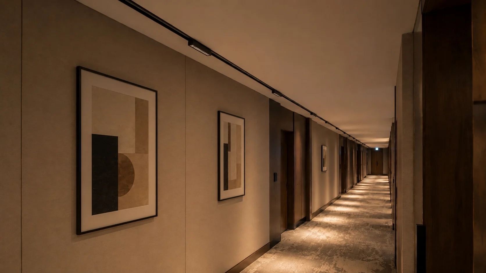
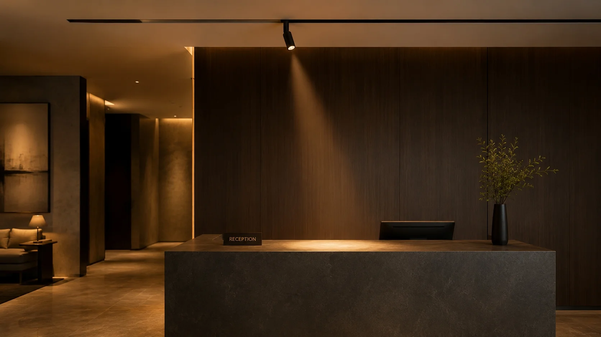

Spot, Flood, Linear Flood, or Grille — A Practical Guide to Choosing the Right Beam Angle for Your Magnetic Track Lighting Project
421| 422| 429| 430| 431|
432|
431|
432| Most buyers choose the wrong beam angle because they pick a module by appearance before they know what the light needs to do. A spotlight looks elegant in a showroom, but put it in a corridor and you get glare complaints. A flood light feels safe, but aim it at artwork and the accent is gone.
433| 434|The beam angle is not a cosmetic choice — it is the single most important technical decision when choosing a magnetic track module for your project. Whether you are specifying for a retail track lighting installation, a hotel corridor, or an open-plan office, getting the beam wrong means the lighting effect fails regardless of the fixture quality. Here is a practical guide for importers, lighting designers and contractors who need to make the right call from the start.
435| 436|Quick Answer
438|Spotlight — accent lighting for retail displays, artwork and reception desks where direction and contrast matter. If you are comparing a spotlight vs flood for commercial track lighting, this is the key distinction: spotlights create focus, floods create ambience.
439|Flood / Linear Flood — even ambient light for corridors, offices and wall washing.
440|Grille module — anti-glare control for reading areas, hotel corridors and classrooms where people spend extended time under direct light.
441|Pendant — decorative hanging installation for dining tables, bar counters and lounge zones.
442|Magnetic Track Lighting Beam Angles: How to Choose the Right Module for Your Commercial Project
445| 446|Retail display or window — Spotlight
447|Tight beam (15° to 30°) creates contrast between product and background, drawing the customer’s eye. For any retail track lighting project, this is the go-to choice. Avoid flood in this role — it washes out the product and removes the visual hierarchy a display needs.
448| 449|Gallery artwork — Spotlight 15°–24°
450|Precise accent with minimal light spill onto adjacent pieces. Head angle is critical here — aim a 15° spotlight 30° off-target and the beam misses the artwork entirely. Always account for swivel range when positioning spotlights above a gallery wall.
451| 452|Open office or meeting room — Flood 60°–120°
453|Even general illumination with soft falloff. No hot spots, no harsh shadows. This is a pure ambient role — spotlights create distracting contrast in a work environment. For a low voltage track lighting system operating at 48V track power, flood modules deliver the most natural office-grade light distribution.
454| 455|Hotel corridor or passageway — Grille module
456|Guests naturally look up while walking through a corridor. A standard flood creates direct glare at these viewing angles. For any hotel track lighting installation where guest comfort matters, a grille module uses a micro-louvre structure to cut glare above 45°, making the space comfortable to walk through. Trade-off: grille modules output 10–15% fewer lumens than a comparable open flood.
457| 458|
459| 460|Wall washing or shelf lighting — Linear flood
461|Rectangular beam pattern washes a wall or shelf from end to end evenly. A round spotlight or standard flood creates scalloped pools of light — linear flood is the only module type that gives a continuous clean wash across a long surface. This makes it the preferred choice for retail wall displays, library shelving and feature walls in hotel lobbies.
462| 463|Restaurant dining table — Spotlight or Pendant
464|Spotlight for focused table illumination that separates the dining zone from the ambient space. Pendant for a decorative presence at a lower mounting height — especially effective over island counters or centre tables.
465| 466|Reading area, library or classroom — Grille module
467|Low UGR for extended visual comfort. People in these spaces will look up at the ceiling — a flood module causes eye fatigue over time. Grille is the correct choice wherever occupants stay in the same zone for more than 30 minutes.
468| 469|Reception desk or counter — Spotlight
470|Directional accent aimed at the desk surface creates a professional, intentional look. Mount one spotlight per desk zone — two spotlights on the same counter create competing highlights that confuse the eye.
471| 472|
473| 474|| Space Type | 478|Recommended Module | 479|Beam | 480|
|---|---|---|
| Retail display / window | Spotlight | 15°–30° |
| Gallery artwork | Spotlight | 15°–24° |
| Open office / meeting room | Flood | 60°–120° |
| Hotel corridor | Grille | Low UGR |
| Wall washing / shelf | Linear flood | Rectangular |
| Restaurant dining | Spotlight or Pendant | 15°–30° |
| Reading area / classroom | Grille | Low UGR |
| Reception desk | Spotlight | 15°–30° |
FAQ: Beam Angle Selection for Magnetic Track Lighting
496| 497|Not sure which module mix suits your project? Tell us your ceiling type, room dimensions and primary use case — we can match the right combination as one complete 48V system.
515| Email Your Project Brief → 516|